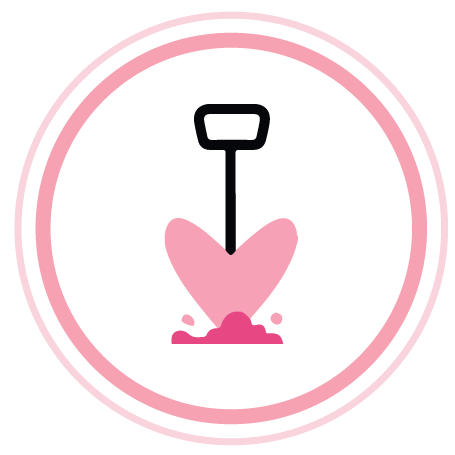
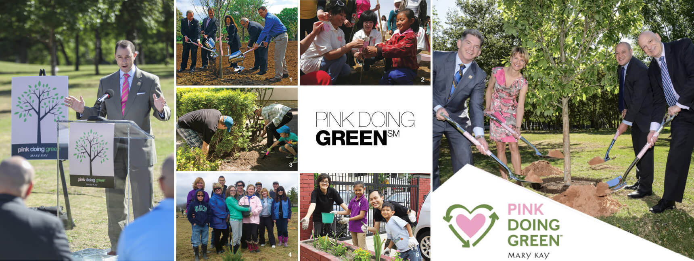

全球再循環計畫
玫琳凱是全球最早制定循環計畫的公司，MARYKAY全球生產中心，每天透過再循環計畫，針對產品的包裝、紙、塑料等進行循環使用。

100％生物降解包裝物料
生物降解包裝物料是可以在自然界降解的材質，
MARY KAY運送產品時使用的包裝填充物，是由可再生栗米和馬鈴薯澱粉組成的可生物降解包裝物料製造
零堆填生產中心
MARY KAY在美國的生產中心，已實現零垃圾埋填，亞太區生產中心則建立可處理150頓的廢水處理站，實行『廢水排放』、『固體廢棄物零填埋』的環保目標。
環保設計包裝
MARY KAY提供創新、環保的產品及包裝， 採用可重複使用的產品設計， 例如MARY KAY的彩妝盒可重複使用的磁石設計，任何彩妝品可隨意組合加進彩妝盒，減少更換浪費100％再生能源使用
MARY KAY全球總部和全球生產中心是由100%的可再生能源提供動力！全球植樹達到100萬棵
於全球分公司活動中種植超過100萬棵樹木
